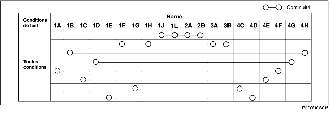
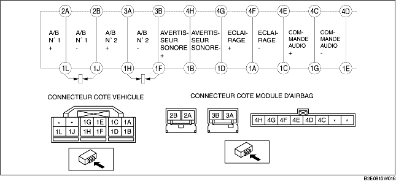

INSPECTION DE RESSORT HÉLICOÏDAL
B3E081066123W03
1. Déposer le ressort hélicoïdal (voir la section DEPOSE/REPOSE DE RESSORT HELICOIDAL.)
2. Vérifier que la continuité correspond aux valeurs indiquées dans le tableau.
-
• Si les valeurs mesurées ne correspondent pas aux spécifications du tableau, remplacer le ressort hélicoïdal.
-
Remarque
-
• Lorsque le connecteur côté véhicule du ressort hélicoïdal est débranché, les bornes 1F, 1H, 1J et 1L sont court-circuitées afin d'éviter un déclenchement (déploiement) inopiné du module d'airbag.

